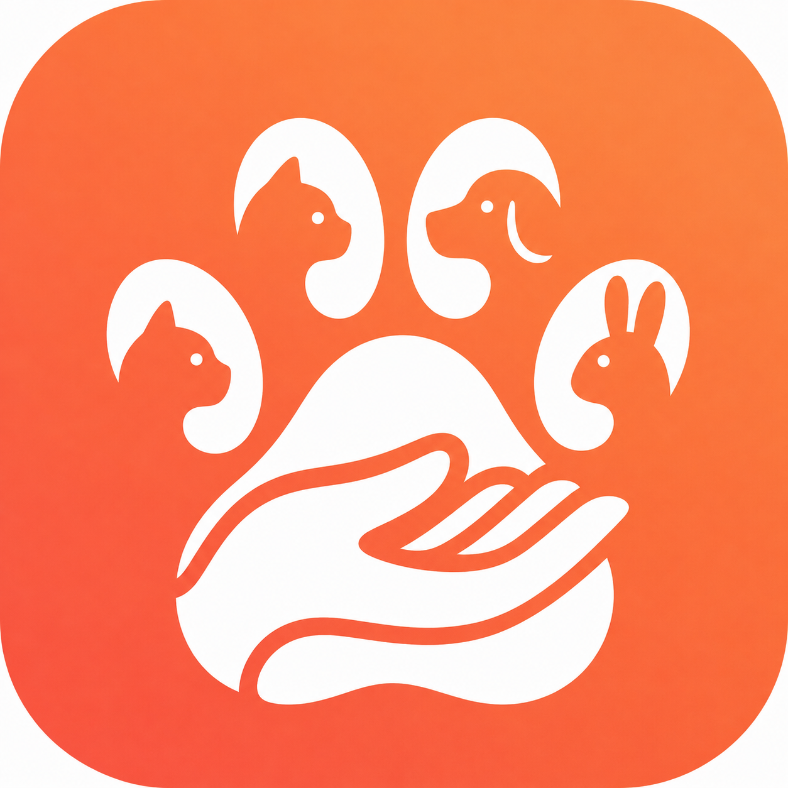

Pati Uzat
Pati Uzat
Sokak hayvanları için topluluk dayanışmasını dijitalde güçlendiren uygulama.
Neden Pati Uzat?
Pati Uzat, mahalle gönüllüleri ile topluluk yöneticilerinin aynı hedefte buluşmasını sağlar: sokak hayvanlarına daha düzenli, şeffaf ve sürdürülebilir destek vermek.
- Harita tabanlı mama ve su noktası yönetimi
- Besleme, hayvan ve saha kayıtlarını tek yerde toplama
- Topluluk içi gider ve katkı kayıtlarını düzenli izleme
- Üyelik, onay ve iş akışlarını organize etme
Kime hitap eder?
Mahalle gönüllüleri, apartman/site toplulukları, yerel hayvan destek grupları ve sokak hayvanlarına düzenli destek vermek isteyen herkes için uygundur.
Vizyonumuz
Yerel dayanışmayı büyütmek, bilgi dağınıklığını azaltmak ve sokak hayvanları için yapılan emeği daha görünür hale getirmek.